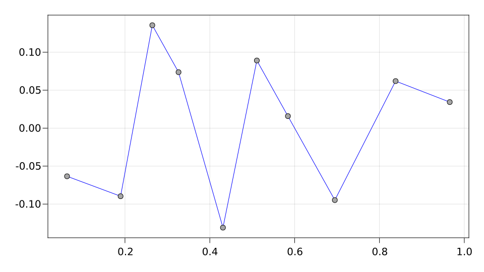
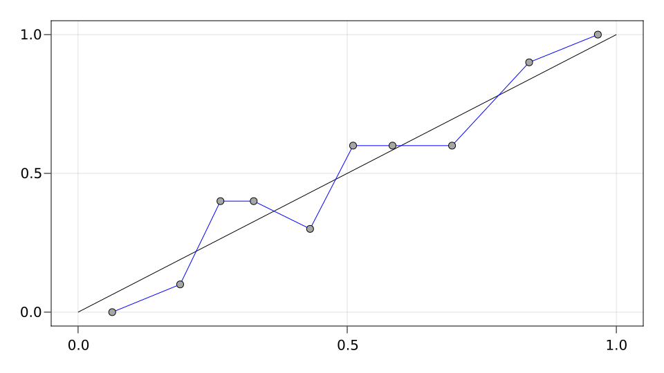
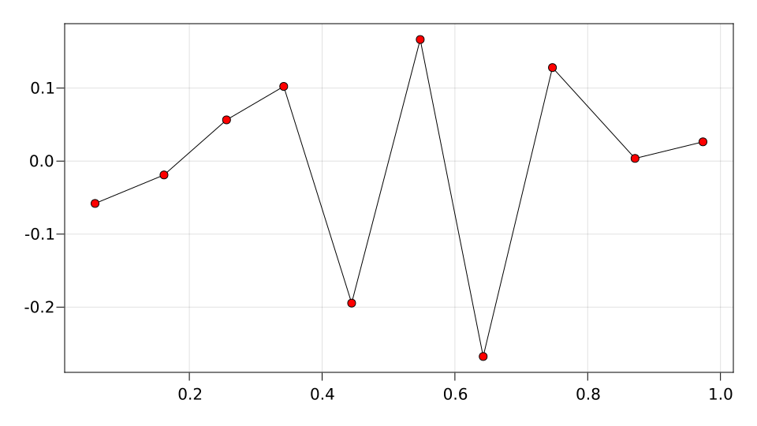
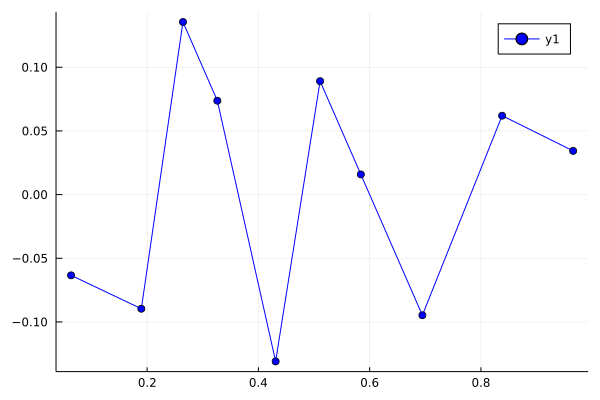
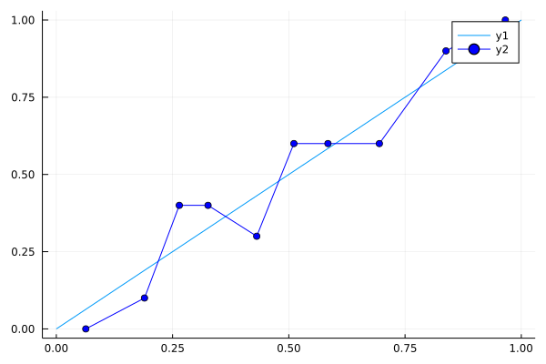
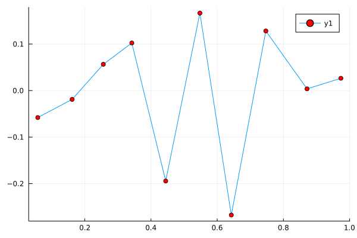

API
Diagrams
Makie
ReliabilityDiagrams.reliability — Functionreliability(probabilities, frequencies; deviation=true, kwargs...)
reliability(probfreqs::AbstractVector{Point2f0}; deviation=true, kwargs...)Plot a reliability diagram of the observed frequencies versus the predicted probabilities.
If deviation is true (default), the difference frequencies - probabilities is plotted versus probabilities. This can be helpful for inspecting how closely the observed frequencies match the predicted probabilities.
Attributes
Available attributes and their defaults for AbstractPlotting.Combined{ReliabilityDiagrams.reliability, T} where T are:
color :black
colormap :viridis
colorrange AbstractPlotting.Automatic()
deviation true
linestyle "nothing"
linewidth 1.0
marker GeometryBasics.Circle{T} where T
markercolor :gray65
markercolormap :viridis
markercolorrange AbstractPlotting.Automatic()
markersize 10
markervisible true
strokecolor :black
strokewidth 1.0reliability(probabilities, outcomes, algorithm; kwargs...)Use the algorithm to form clusters of predicted probabilities and corresponding outcomes, and plot a reliability diagram of the observed frequencies versus the mean probabilities in each cluster.
Example
using ReliabilityDiagrams
using CairoMakie
probabilities = rand(100)
outcomes = rand(100) .< probabilities
reliability(probabilities, outcomes, EqualMass(10); color=:blue)
lines([0, 1], [0, 1])
reliability!(probabilities, outcomes, EqualMass(10); color=:blue, deviation=false)
reliability(probabilities, outcomes, EqualSize(10); markercolor=:red)
Plots
ReliabilityDiagrams.reliabilityplot — Functionreliabilityplot(probabilities, frequencies; deviation=true, kwargs...)Plot a reliability diagram of the observed frequencies versus the predicted probabilities.
If deviation is true (default), the difference frequencies - probabilities is plotted versus probabilities. This can be helpful for inspecting how closely the observed frequencies match the predicted probabilities.
reliabilityplot(probabilities, outcomes, algorithm; kwargs...)Use the algorithm to form clusters of predicted probabilities and corresponding outcomes, and plot a reliability diagram of the observed frequencies versus the mean probabilities in each cluster.
Example
using ReliabilityDiagrams
using Plots
probabilities = rand(100)
outcomes = rand(100) .< probabilities
reliabilityplot(probabilities, outcomes, EqualMass(10); color=:blue)
plot([0, 1], [0, 1])
reliabilityplot!(probabilities, outcomes, EqualMass(10); color=:blue, deviation=false)
reliabilityplot(probabilities, outcomes, EqualSize(10); markercolor=:red)
Binning algorithms
ReliabilityDiagrams.EqualMass — TypeEqualMass(n::Int)Create binning algorithm with n bins of (approximately) equal number of probabilities.
ReliabilityDiagrams.EqualSize — TypeEqualSize(n::Int)Create binning algorithm of the probability simplex with n bins of the same size.